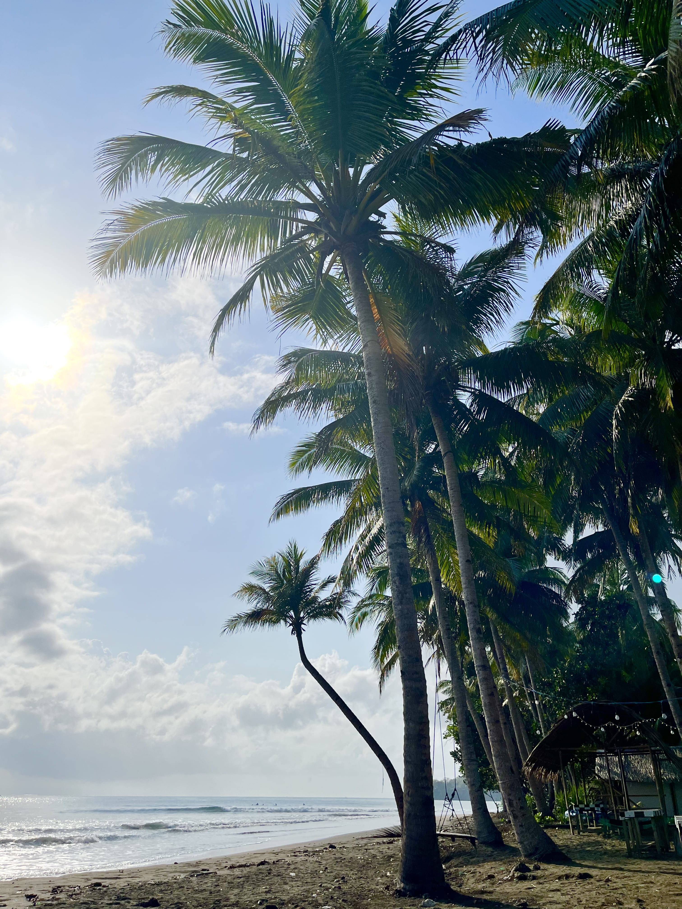

Batukaras
Welcome to Dream Wave
Batu Karas is a tourist destination located in West Java, Indonesia. Famous with its beautiful beaches, Batu Karas is an option for visitors who are looking for a tranquility and natural scenery and stunning natural scenery. Here, you can escape from the hustle and bustle of everyday life and find peace and relaxation. is an attractive tourist destination with various natural attractions and enjoyable activities. The main beach in this area features soft sand and clear seawater, perfect for swimming, sunbathing, or relaxing. The waves here are also suitable for surfing, making it a popular spot for surfers, both beginners and experienced. We very welcome to all surfing abilities here. Nature Tourism : Surrounding Batu Karas are several interesting spots like hills that offer stunning views and caves that can be explored. You can go trekking to enjoy the beautiful natural scenery. Batu Karas also offers a variety of delicious foods, especially fresh seafood. In this quaint little fishing village is a perfect place for a relaxing vacation and enjoying the beauty of nature. Once you visit, you'll fall in love. You just need to join us to prove it for yourself.
Upcoming Batu Karas Dates :
7 days, 6 nights.
November 11 - 17th, 2025
SURF - EXPLORE - RELAXING
The retreat aims to provide a balancedexperience of adventure and relaxation. You can enjoy the beauty of the beach, waves and stunning natural scenery while surfing or doing other outdoor activities. Which helps reduce stress and improve mental well-being.
Surfing is a great physical activity, helping to improve muscle strength, balance and endurance. You can learn new surfing techniques, as well as get guidance from experienced instructors. In addition, you can also enjoy nature and beautiful scenery, can feel the tranquility offered by the surrounding environment. The tranquil atmosphere away from the daily routine helps you to relax your mind and reduce stress. The retreat also builds community and provides an opportunity to meet new people who share similar interests, to build a network of new friends and share experiences exploring the local culture, tasting specialty foods, and interacting with locals. With these goals in mind, surf, explore and relaxation retreats offer a holistic and refreshing experience.